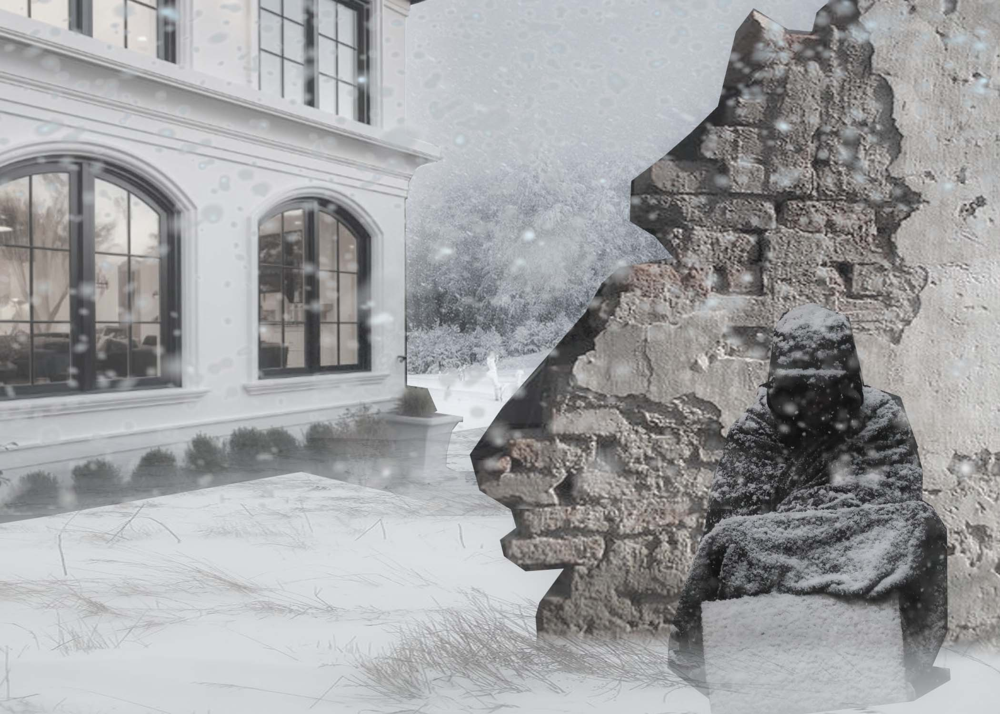
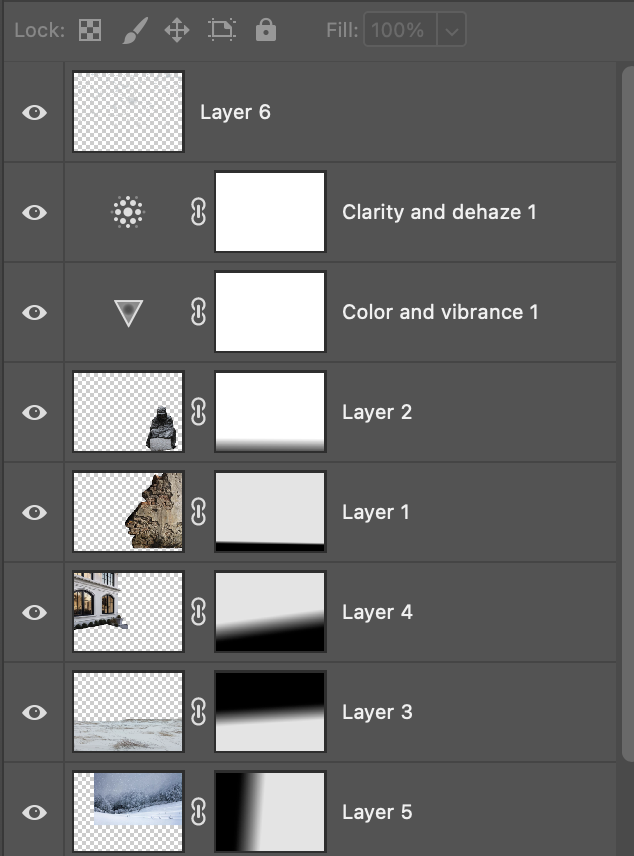

The main theme of this picture is the harsh reality of winter for homeless individuals. It’s been an ever-growing problem, as there aren’t enough jobs for individuals or for those who can’t find work. These individuals are left outside to suffer, as the government isn’t doing enough to aid them in times of serious need. As the famous saying goes, the rich get richer, and the poor get poorer. I’ve added themes of winter, and an individual in the winter, trying to stay warm in front of a crumbling wall. I’ve added a contrast of poverty and wealth, one suffers in the stiff cold, and the other in the warmth of the house. I’ve used many mask layers to blend the layers, as well as adjustment layers, reducing saturation to show a lack of color. I wanted to show the whiteness of the snow, the lack of color, and convey a hopeless emotion. As well as a clarity and dehaze layer to add an almost foggy appearance.